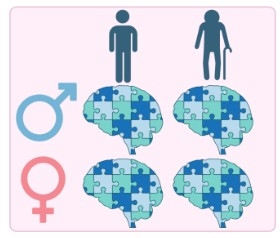
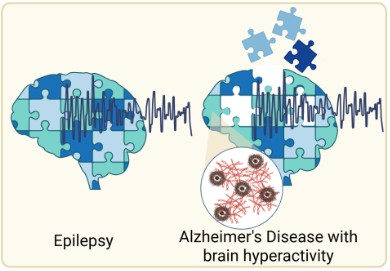
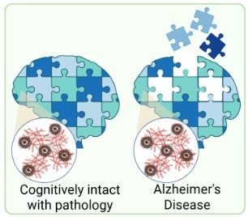
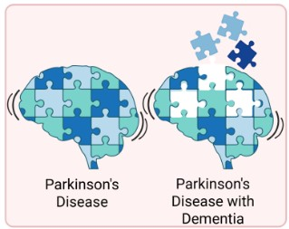

Research Projects

Multi-'omics Atlas Project of Alzheimer's Disease (MAP-AD)
The MAP-AD project is our flagship initiative to build a comprehensive multi-'omic atlas of synaptic and cellular changes in Alzheimer's disease. Using human post-mortem brain tissue, we integrate synaptic proteomics, single-nuclear RNA sequencing, and advanced imaging to identify which synaptic components are most vulnerable across brain regions and disease stages.
This resource is being made publicly available at map-ad.org to accelerate the wider field.

Synaptic Multi-Omics
We apply cutting-edge multi-omic approaches — including synaptic proteomics, phosphoproteomics, and transcriptomics — to build a high-resolution molecular picture of the synapse in health and disease. By integrating data across multiple layers of biology, we identify convergent pathways and prioritise targets for therapeutic intervention in Alzheimer's disease and other dementias.

Impact of Age and Sex on the Synaptic Proteome
Age is the greatest risk factor for Alzheimer's disease, and sex significantly influences disease presentation and progression. We are investigating how normal ageing and biological sex shape the synaptic proteome, and how these factors interact with Alzheimer's pathology. Understanding these differences is critical for developing targeted and equitable therapeutic strategies.

The Synaptic Proteome with Disease Progression
Synapse loss is one of the strongest correlates of cognitive decline in Alzheimer's disease, yet how the molecular composition of the synapse changes across disease stages remains poorly understood. We are mapping the trajectory of the synaptic proteome from early pathological changes through to end-stage disease, using well-characterised post-mortem tissue spanning the full spectrum of Alzheimer's progression. This work aims to identify early synaptic changes that precede overt neurodegeneration and may represent windows for therapeutic intervention.

Molecular Basis of Synaptic Hyperactivity
Synaptic hyperactivity is an early feature of Alzheimer's disease, preceding widespread neurodegeneration and cognitive decline. We are investigating the molecular mechanisms that drive pathological increases in synaptic excitability, including changes in excitatory and inhibitory synaptic proteins and their interplay with amyloid and tau pathology. Understanding the molecular basis of this hyperactivity may reveal new targets to restore synaptic balance and slow disease progression.


Cognitive Resilience and the Synaptic Proteome
Some individuals harbour significant Alzheimer's pathology yet maintain relatively preserved cognitive function — a phenomenon known as cognitive resilience. We are investigating whether specific features of the synaptic proteome underlie this resilience, seeking to identify protective molecular signatures at the synapse. Understanding what makes some synapses resistant to pathological insult could open entirely new avenues for therapeutic strategies aimed at boosting resilience rather than simply targeting disease mechanisms.